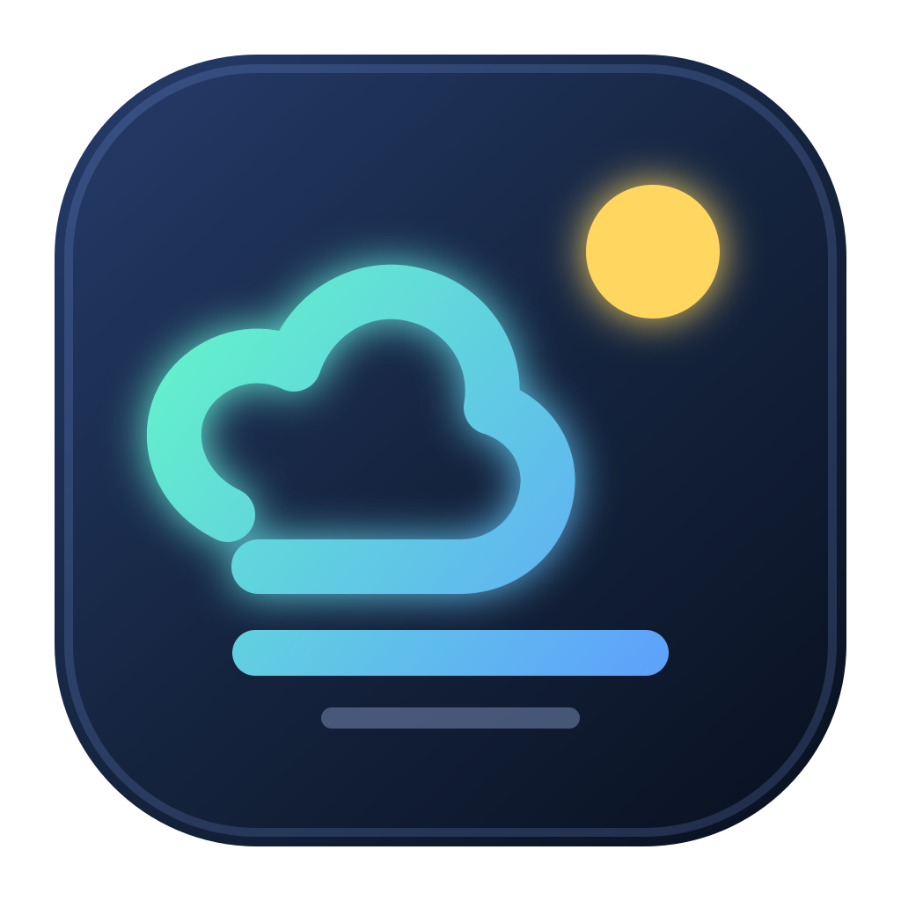

工位岛
WORKDAY ISLAND
v0.5.0
专注中
50:00
精简
置顶
i
工作中
10:34
AM
7月19日 · 星期日
今日已赚
¥0.00
设置月薪后开始计算
下班倒计时
07:26:18
18:00
09:00 — 18:00
18%
🌤️
--°
天气加载中
TODAY
我的待办
＋
新建待办
待处理
0
全部
已完成
QUICK CAPTURE
新建待办
×
待办内容
提醒时间
可选
备注
可选
取消
保存待办
PREFERENCES
工作时间设置
×
上班时间
下班时间
月薪
仅保存在本机
月计薪天数
天气城市
工作日
界面语言
跟随系统
中文
English
窗口保持置顶
让倒计时和待办始终触手可及
取消
保存设置
×
WORKDAY ISLAND
关于工位岛
一座安静悬浮在桌面的工作小岛。
版本
0.5.0
作者
Backlight Studio
邮箱
asbacklight@gmail.com
!
待办到时间了
该处理待办啦
点击停止